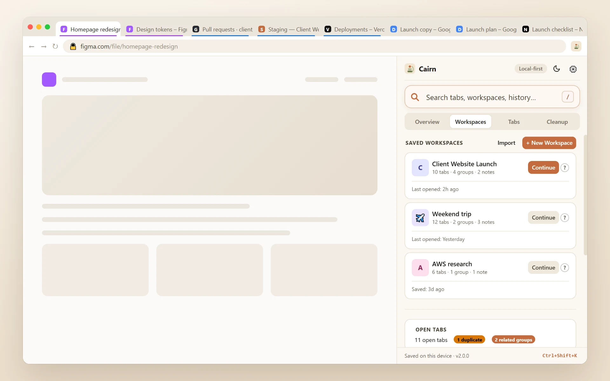
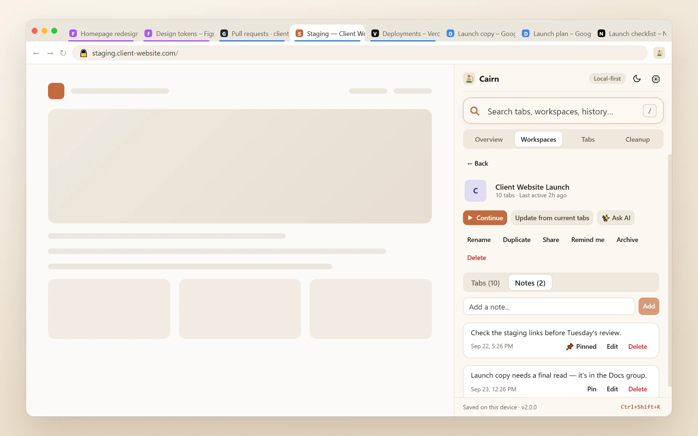
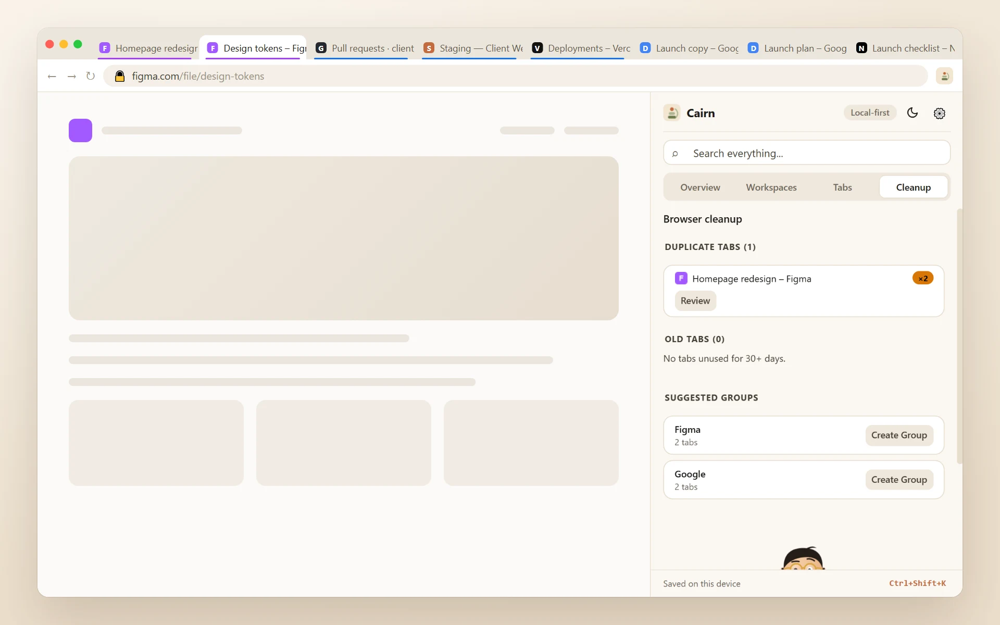
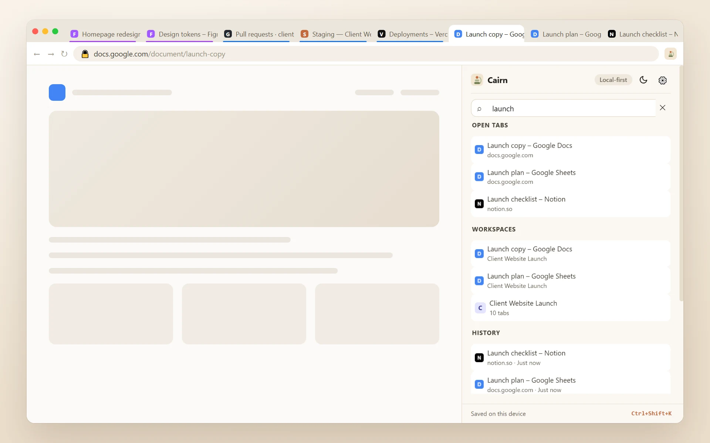

Close 30 tabs guilt-free.
Save all your open tabs as a named workspace, close everything, and get it all back in one click.
You have 30 tabs open and can’t close them.
Because closing them means losing them.

Cairn turns that pile into named workspaces.
Put one down and pick it back up next week, next sprint, or next month. Close everything guilt-free, then get it all back exactly as it was.
Save, close, continue
The whole loop, simulated. Nothing here touches your real browser.
10 tabs, one project
You’re deep in work across a pile of tabs. Instead of bookmarking them one by one, save them as a workspace before you close anything.
CairnHow Cairn works
Three steps. No account, no setup.
Save
Name your tabs. Keep the whole setup.
Save the tabs you have open as a named workspace, from the side panel or the command palette. Take all of them, or tick just the ones you want.
Close
Close everything. Nothing is lost.
Close your browser, or move on to something else. The workspace is saved in Chrome’s storage on your device, ready next week or next month.
Continue
One click, and you’re back.
Click Continue on that workspace whenever you’re ready, and every tab reopens exactly where you left off.
Why the name “Cairn”?
On mountain trails, a cairn is a stack of stones that marks the way through fog and rough ground. Cairn does the same for your browsing: a marker that leads you back to what you were doing.
More than a list of links
Save your tabs, keep notes beside them, clear the clutter, and find anything again.
One click reopens every tab, exactly as it was.
Tab groups, pinned state, and order are all preserved — not just a list of links you have to re-open one by one.


Not just tabs — the context around them.
Every workspace carries its own notes, right next to the tabs they’re about. Nothing rots in a separate app.
Finds the clutter. You approve every close.
Duplicate tabs, stale tabs, and smart group suggestions — reviewed and confirmed, never auto-rearranged.


“Where did I see that?” Answered in one search.
Tabs, history, bookmarks, workspaces, and notes — searched together, grouped by source, one click to open.
Why you kept it, and when to come back
A week later, a tab title tells you nothing. These are the things that do.
A note on any tab
One line about why you kept it — "password is in the launch doc". It sits where the address would be, and search finds the tab by it.
Read later
Right-click any page or link to put it on one list, and tick things off as you read them.
Reminders
Ask Cairn to bring a workspace back to you later today, tomorrow morning, this weekend, or at a time you pick.
Send a workspace
Save it as a file and pass it on. They import it and get their own copy, tabs and notes included. Nothing is uploaded.
Backups on their own
A copy of everything into your downloads folder, daily or weekly, keeping the last ten. Plain JSON you can read.
Nothing new is asked of you at install. Saving backup files and showing notifications are asked for only if you switch those features on, and everything still stays on your device.
Everything in 2.0.0 →The tabs you never got round to saving
Try losing them. Go on — nothing here is real.
Eleven tabs. Not one of them saved anywhere.
Taken quietly in the background and kept on your device.
Anything older than a week is thrown away.
Private windows are left out of every snapshot.
Nothing reopens by itself. Tabs you close while you work are never offered back.
It stays on your device, and it’s optional.
Switch it off any time in Settings → Recover tabs after a crash.Your data stays on your device
No account. No server. No telemetry of any kind.
Local-first storage
Workspaces, notes, and settings live in Chrome's local storage on your device — nowhere else. There is no Cairn server to send them to.
History & bookmarks, read-only
Searched locally to power universal search. Never collected, never transmitted. Either source can be switched off in Settings.
AI is opt-in, every time
Off by default. Shows exactly what will be sent before anything goes out, using your own API key.
Not another tab manager
What the browser’s own tools leave out.
With CairnCairn saves everything open right now — all your tabs at once, with groups, pinned state, and order preserved — restorable in one click.
Bookmarks save one link at a time and lose all arrangement.
With CairnNamed, intentional, and permanent — pick a workspace back up next week, next month, whenever.
That only covers the last few minutes.
With CairnPut a project down and pick it back up when you need it. Crash recovery covers the tabs you never got round to saving.
The tabs stay open because closing them feels like losing them, and a crash or restart can still take them with it.
Prefer to watch?
The whole story in under a minute.